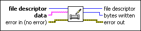
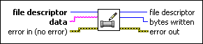

Write To Pipe VI
Owning Palette: Pipes VIs
Requires: Base Development System (Linux)
Writes a data string to a pipe. For this VI, you must have opened the pipe as a write pipe.

 Add to the block diagram Add to the block diagram |
 Find on the palette Find on the palette |
Owning Palette: Pipes VIs
Requires: Base Development System (Linux)
Writes a data string to a pipe. For this VI, you must have opened the pipe as a write pipe.

| Add to the block diagram |
Find on the palette |
 |
file descriptor is the file descriptor to use when writing to the opened pipe. |
 |
data is the data to write to the pipe. |
 |
error in describes error conditions that occur before this node runs. This input provides standard error in functionality. |
 |
file descriptor is the file descriptor to use when reading from and writing to the opened pipe. |
|
bytes written is the number of bytes written, which can be less than the number of bytes in data. |
 |
error out contains error information. This output provides standard error out functionality. |